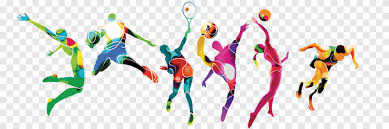

| INICIO. |
que es la educacion fisica |
flexibilidad |
mejores ejercios |
medidas de las canchas |
reglas de los juegos |
>
Los mejores ejercicios
Los mejores ejercicios para mejorar la fuerza, la resistencia y la coordinacion son aquellos que involucran el uso de varios grupos musculares al mismo tiempo,
como los ejercicios de peso corporal, el levantamiento de pesas y los ejercicios de resistencia, tambien teniendo en cuenta tus objetivos de ganancia de musculo o
perdida de peso, o de ser mas agil, todo depende de lo que desees conseguir fisicamente, para una buena ganancia muscular lo mejor de lo mejor en cuanto a ejercicios
son las sentadillas, las flexiones de brazos, los abdominales y los ejercicios de peso muerto, que ayudan a desarrollar la fuerza y la resistencia muscular,
ademas, es importante incluir ejercicios de estiramiento y movilidad en la rutina de ejercicios para mejorar la flexibilidad y prevenir lesiones.
Por otro lado, si tu objetivo es perder peso, lo mejor es combinar ejercicios de alta intensidad con ejercicios de resistencia, como correr, nadar o andar en bicicleta,
que ayudan a quemar calorias y mejorar la salud cardiovascular, ademas de incluir ejercicios de fuerza para mantener la masa muscular y mejorar el metabolismo.
En resumen, los mejores ejercicios son aquellos que se adaptan a tus objetivos y necesidades, y que te permiten mejorar tu salud y bienestar de manera integral.